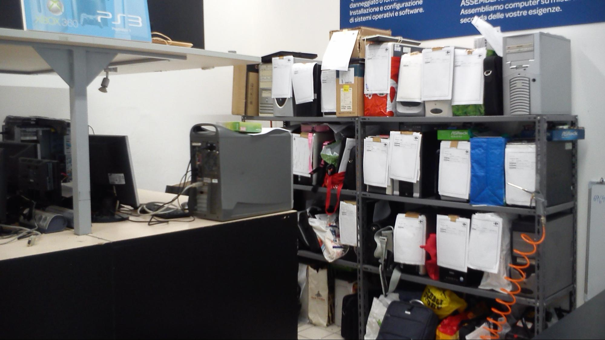

Cosa avrei voluto fare
Mandarmi a fare lo stage li è stato davvero buona come idea per me, perchè li si lavora piu sull'assistenza tecnica l'80 % lo fanno le mani il 20% i software, era propio quello che volevo io, ho imparato moltissimi cose ,alcune le sapevo già ma li le ho approfondite, sono molto contento che mi abbiano mandato di la perchè si impara davvero il mestiere cè sempre lavoro da fare li, arrivano molti computer ognuno con un problema diverso, ciò significa che si imparano molte piu cose
